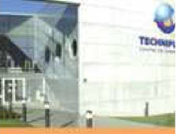
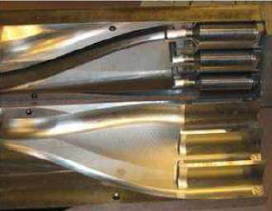

The Technifutur Competence Centre develops and offers training courses for workers, job seekers, trainers and students alike and is certified by the Walloon Region.
Non profit making Competence Center
-
6 competence areas:
- Assembly
- Production
- Mechatronics
- Micro-technologies
- Maintenance
Collaboration with ITER:
Realisation (in 2003) of 8 prototypes (scale 1/5) of the high frequency heating antennas


Contact Person
Ms Christine Mertens
email:
christine.mertens@technifutur.be
tel: +32 4 3824571
fax: +32 4 3824599
http://www.technifutur.be
Liege Science Park,
Rue Bois Saint Jean, 15-17
B-4102 Seraing
Belgium
Contact Person
Ms Christine Mertens
email:
christine.mertens@technifutur.be
tel: +32 4 3824571
fax: +32 4 3824599
http://www.technifutur.be
Liege Science Park,
Rue Bois Saint Jean, 15-17
B-4102 Seraing
Belgium